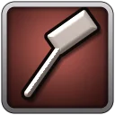
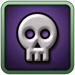
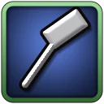
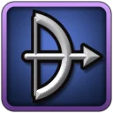
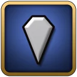
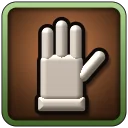

Status effect
Stunned (general)
Stunned is a disable applied by units and commanders.
What it does
A unit with this effect: cannot move, attack or cast.
This is a disable. Disables also count as debuffs.
Stacking and duration
- It does not stack. A unit carries one copy at a time. Applying it again renews it: the longer of the time left and the new duration is kept.
See How status effects work for how effects stack, renew and expire, and Stat reference for what each stat means.
Applied by
| Source | Type of source | Duration |
|---|---|---|
 Rivet Burst Rivet Burst | Unit ability of Gutter Scavenger | 0.5 / 0.75 / 1 seconds (by star) |
 Goring Charge | Unit ability of Thornback Boar | 1 / 1.25 / 1.5 seconds (by star) |
 Grave Chain | Unit ability of Chainwarden | 1 / 1.5 / 2 seconds (by star) |
 Hellfire Brand | Unit ability of Hellblade Reaver | 1.5 / 2.5 / 3.5 seconds (by star) |
 Hex Jar Hex Jar | Unit ability of Marsh Hag | 1 second |
 Crushing Tide Crushing Tide | Unit ability of Drowned Behemoth | 2 / 2.25 / 3 seconds (by star) |
 Skyfall Arrow | Unit ability of Skyfall Archer | 1.5 / 2 / 3 seconds (by star) |
 Basilisk Glare Basilisk Glare | Unit ability of Deep Basilisk | 2 / 3 / 4 seconds (by star) |
 Stilled Hour | Unit ability of Hourblade | 2 / 3 / 4 seconds (by star) |
 Pit Golem Pit Golem | Commander ability of Vey the Pactbinder | 2 seconds |
 Pit Colossus Pit Colossus | Commander ability of Vey the Pactbinder, unlocked by the talent Pit Colossus | 3 seconds |
 Haymaker Haymaker | Commander ability of Brugg Ironjaw, unlocked by the talent Haymaker | 1.5 seconds |
 Smoke and Mirrors Smoke and Mirrors | Commander ability of Pip Quickfingers | 1.5 seconds |
 Free-for-All | Commander ability of Pip Quickfingers | 1.5 seconds |
 Smoke Bomb Smoke Bomb | Commander ability of Pip Quickfingers, unlocked by the talent Smoke Bomb | 1 second |
 Grand Melee Grand Melee | Commander ability of Pip Quickfingers, unlocked by the talent Grand Melee | 2.5 seconds |
Back to the list of status effects.